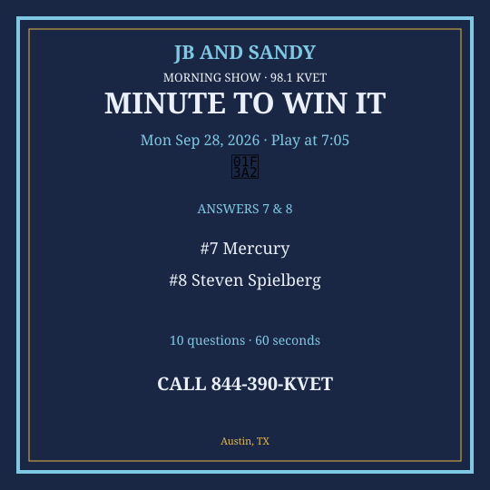
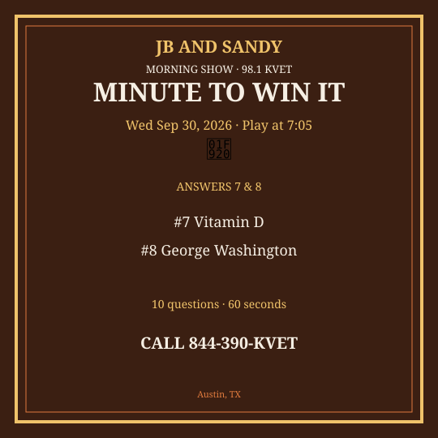

M2W Sep 28-Oct 2 2026
New packet. Questions get harder as you go. Graphics are Q7 & Q8 only.
Monday — Mon Sep 28, 2026
Question 1: How many wheels does a bicycle have?
Answer: Two
Question 2: What color are stop signs in the U.S.?
Answer: Red
Question 3: Which bird is on the Texas state flag? None — what’s on the flag?
Answer: A lone star
Question 4: What do pandas mainly eat?
Answer: Bamboo
Question 5: Which sport uses a puck?
Answer: Hockey
Question 6: What is the capital of France?
Answer: Paris
Question 7: What metal is liquid at room temperature?
Answer: Mercury
Question 8: Who directed the movie “Jaws”?
Answer: Steven Spielberg
Question 9: How many U.S. Supreme Court justices are there?
Answer: Nine
Question 10: What is the name of the line at 0 degrees latitude?
Answer: Equator
Social card for Q7 & Q8 — download and post:
{kind=link}

Tuesday — Tue Sep 29, 2026
Question 1: What do you put in a toaster?
Answer: Bread
Question 2: How many legs does a spider have?
Answer: Eight
Question 3: Which Texas city is nicknamed “Big D”?
Answer: Dallas
Question 4: What is the opposite of north?
Answer: South
Question 5: Which instrument is Willie Nelson most associated with?
Answer: Guitar
Question 6: What is the fastest land animal?
Answer: Cheetah
Question 7: What does ATM stand for?
Answer: Automated Teller Machine
Question 8: Who wrote “The Hobbit”?
Answer: J.R.R. Tolkien
Question 9: What is the boiling point of water in Fahrenheit at sea level?
Answer: 212
Question 10: Which planet has the most prominent rings?
Answer: Saturn
Social card for Q7 & Q8 — download and post:
{kind=link}
Wednesday — Wed Sep 30, 2026
Question 1: What color is grass?
Answer: Green
Question 2: How many sides does a triangle have?
Answer: Three
Question 3: What is the state flower of Texas?
Answer: Bluebonnet
Question 4: What do you call frozen water?
Answer: Ice
Question 5: Which team plays at Minute Maid Park?
Answer: Houston Astros
Question 6: What is the largest mammal?
Answer: Blue whale
Question 7: What vitamin do you mainly get from sunlight?
Answer: Vitamin D
Question 8: Who was the first President of the United States?
Answer: George Washington
Question 9: What is 15% of 200?
Answer: 30
Question 10: In what city would you find the Parthenon?
Answer: Athens
Social card for Q7 & Q8 — download and post:
{kind=link}

Thursday — Thu Oct 1, 2026
Question 1: What do cats say?
Answer: Meow
Question 2: How many hours are in a day?
Answer: 24
Question 3: Which Austin street is famous for live music and bats?
Answer: Congress Avenue / 6th Street (Congress for bats)
Question 4: What fruit is a dried grape?
Answer: Raisin
Question 5: Which country is shaped like a boot?
Answer: Italy
Question 6: What is the hardest natural substance?
Answer: Diamond
Question 7: What does NASA stand for?
Answer: National Aeronautics and Space Administration
Question 8: Who painted “Starry Night”?
Answer: Vincent van Gogh
Question 9: What is the capital of Canada?
Answer: Ottawa
Question 10: How many keys are on a standard piano?
Answer: 88
Social card for Q7 & Q8 — download and post:
{kind=link}
Friday — Fri Oct 2, 2026
Question 1: What do you wear on your feet?
Answer: Shoes
Question 2: How many months have 31 days?
Answer: Seven
Question 3: What is the nickname of the Texas state fair’s big cowboy statue?
Answer: Big Tex
Question 4: What is 9 × 8?
Answer: 72
Question 5: Which ocean is the largest?
Answer: Pacific
Question 6: What gas makes soda fizzy?
Answer: Carbon dioxide
Question 7: What is the name of Sherlock Holmes’s assistant?
Answer: Dr. Watson
Question 8: Who invented the telephone?
Answer: Alexander Graham Bell
Question 9: What year did World War II end?
Answer: 1945
Question 10: What is the smallest U.S. state by area?
Answer: Rhode Island
Social card for Q7 & Q8 — download and post:
{kind=link}